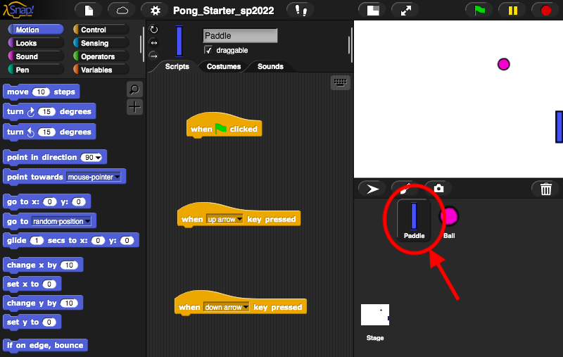
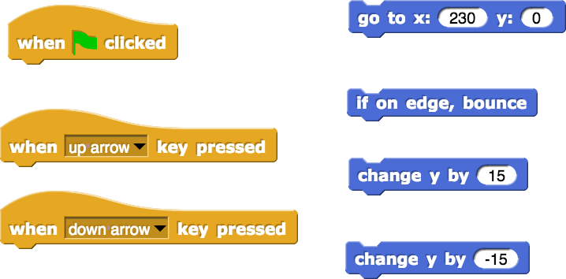
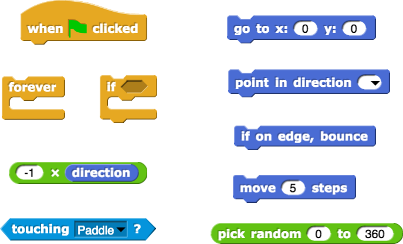
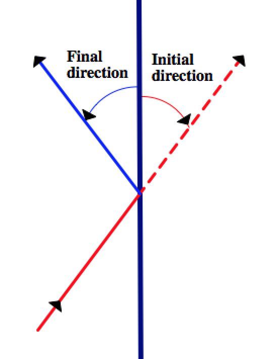
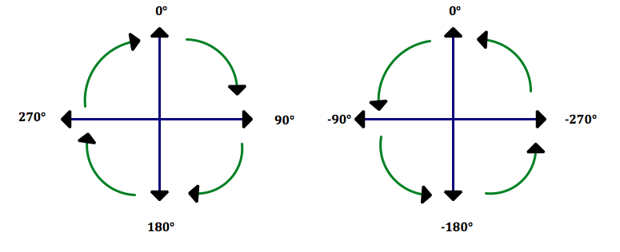
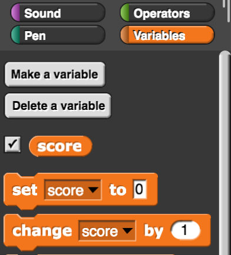
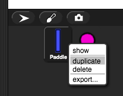

The Game of Pong
You are going to model a game called Pong, developed by Atari in 1972. You will write code to move the paddle up and down and to make the ball bounce when it hits a wall or the paddle.

-
Click here to load a starter project.

You should see the paddle sprite's code. If not, click "Paddle" in the bottom right. -
Write the code for the paddle first. The paddle should be allowed to move only up and down near the right edge of the screen. When the user presses the up/down arrow keys on the keyboard, the paddle should move up or down a certain amount but it should never wander off the edges of the screen.

You may find the following blocks useful. -
Now, write code for the ball. At the start of the game, place the ball in the middle of the screen, give it a random direction, and make it move. Then check if the ball is at the edge of the screen or is touching the paddle. In each case the ball needs to bounce.

You may find the following blocks useful. See also, just below, some diagrams for coding the ball bounce. -
Below are two possibly-useful diagrams for coding the ball bounce.
 
In Snap!, positive angles are measured clockwise from the up (0°) direction. Negative angles are measured counterclockwise from the up (0°) direction. -
(optional) Add scoring to your game. Every time the ball bounces off the paddle, the player should earn a point. Every time the ball hits the right wall, the player should lose a point. You can create a variable to keep track of the score.
 -
(optional) Add a second paddle to make a multiplayer game. Change your code to handle keyboard input from two users. To clone a sprite, right-click to open a menu, then click "duplicate".

Right-click on Chromebooks and Macs: press or tap the touchpad with two fingers. Chromebooks: you can also press Alt, then click with one finger. Macs: you can also press Control (not Command!), then click with one finger.
-
(optional) Drive the second paddle automatically for a "human versus computer" game. You may find the following block (in the "Sensing" menu) useful.
Credits
Content adapted directly from BJC U1 Optional Projects and corresponding hints.